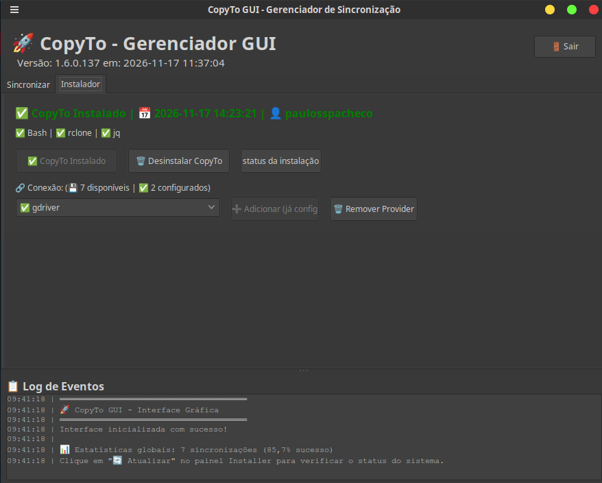

Versão do programa descrita aqui: 1.6.0.137 (17/11/2026)
A aba Instalador é onde você prepara o CopyTo para funcionar: instala o programa, confere as ferramentas de apoio e escolhe onde guardar suas cópias (as conexões, também chamadas de providers). Ela fica ao lado da aba Sincronizar, que é a tela do dia a dia.
Também dá para chegar aqui pelo botão ⚙️ Conexões, na aba Sincronizar.

Exemplo: CopyTo instalado e com duas conexões configuradas.
| Parte da tela | O que mostra |
|---|---|
| Título e versão (topo da janela) | Nome do programa, versão e data de geração. Não pertencem à aba: aparecem em todas. O botão Sair também. |
| Linha de estado | ✅ CopyTo Instalado | 📅 data | 👤 usuário (em verde) quando instalado, ou ⚠️ CopyTo NÃO Instalado (em marrom). A data e o usuário são os da instalação. |
| Ferramentas de apoio | ✅ Bash | ✅ rclone | ✅ jq. Um ❌ indica que aquela ferramenta não foi encontrada. |
| Botões de instalação | Instalar, Desinstalar e status da instalação (seção 2). |
| Resumo das conexões | 🔗 Conexão: (💾 7 disponíveis | ✅ 2 configurados): quantos serviços ainda podem ser adicionados e quantos já estão prontos. |
| Lista de conexões | Os serviços, com os botões Adicionar e Remover ao lado (seção 3). |
| Log de Eventos (parte de baixo) | O registro de tudo o que o programa faz. Veja o Manual do Usuário, seção 8. |
O CopyTo depende de três programas pequenos. Você não precisa instalá-los à mão: o botão Instalar cuida disso.
| Ferramenta | Para que serve |
|---|---|
| Bash | Executa os scripts do CopyTo. No Windows, o CopyTo instala o Git Bash para você, se for preciso. |
| rclone | Faz a transferência dos arquivos para a nuvem. |
| jq | Lê e organiza os dados de configuração. |
Os botões mudam de texto e ficam apagados (sem resposta ao clique) quando não fazem sentido naquele momento. Isso evita erros.
| Botão | Quando está ativo | O que faz |
|---|---|---|
| 🚀 Instalar CopyTo | Só se o CopyTo não está instalado | Instala as ferramentas de apoio, cria os atalhos do CopyTo GUI e, ao final, confere o estado. |
| ✅ CopyTo Instalado | (é o mesmo botão, já apagado) | Mostra que a instalação está feita. Não há nada a clicar. |
| 🗑️ Desinstalar CopyTo | Só se o CopyTo está instalado | Remove o CopyTo (seção 5). |
| status da instalação | Sempre, se nada estiver em andamento | Confere de novo se o CopyTo está instalado, se as ferramentas existem e quais conexões estão configuradas. Atualiza toda a tela. |
Todos os botões e a lista de conexões ficam apagados enquanto uma operação está em andamento, mesmo que ela esteja na aba Sincronizar. Voltam ao normal quando termina.
Uma conexão é o serviço ou o lugar onde as cópias ficam: Google Drive, OneDrive, Dropbox, uma pasta do computador, o celular e outros.
A lista tem até duas partes, separadas por uma linha ─────────────:
dropbox.✅ gdriver.O CopyTo lembra a última conexão que você escolheu e a seleciona de novo na próxima vez.
| Serviço | O que acontece |
|---|---|
Google Drive (gdriver), OneDrive, Dropbox |
O programa avisa que vai abrir o navegador. Confirme, entre na sua conta e autorize o acesso. |
| IDrive E2, Backblaze B2 | Pedem os dados da conta (endereço, região, nome do bucket e chaves de acesso), que você encontra no painel do serviço. |
Pasta local (local) |
Pede a pasta onde as cópias serão guardadas, por exemplo em um HD externo. |
| Celular | Veja a seção 10 do Manual do Usuário. |
Se o serviço já está configurado, o botão fica apagado e mostra ➕ Adicionar (já configurado).
Os arquivos que já estão na nuvem não são apagados. Só a ligação do CopyTo com o serviço é desfeita.
Os textos dos botões explicam o motivo:
| Situação | Botão | Texto |
|---|---|---|
| CopyTo não instalado | Adicionar | ➕ Adicionar (instale o CopyTo primeiro) |
| Serviço escolhido já configurado | Adicionar | ➕ Adicionar (já configurado) |
| Nada escolhido na lista | Remover | 🗑️ Remover (selecione um provider) |
| Serviço escolhido ainda não configurado | Remover | Fica apagado: só se remove o que já foi adicionado |
Seus arquivos, na nuvem e no computador, não são apagados. Só os programas e as configurações do CopyTo são removidos.
| Sintoma | O que fazer |
|---|---|
| Aparece ❌ ao lado de Bash, rclone ou jq | Clique em 🚀 Instalar CopyTo de novo. Se o botão estiver apagado, use status da instalação para atualizar a tela. |
| A tela parece desatualizada (botões que não combinam com o estado) | Clique em status da instalação. |
| Todos os botões estão apagados | Há uma operação em andamento, talvez na aba Sincronizar. Aguarde terminar. |
| O navegador não abriu ao adicionar Google Drive, OneDrive ou Dropbox | Confirme que há um navegador padrão e tente ➕ Adicionar de novo. |
| ➕ Adicionar está apagado | Veja o texto do botão: ou falta instalar o CopyTo, ou o serviço já está configurado. |
| A lista de conexões está vazia | Instale o CopyTo e clique em status da instalação. |